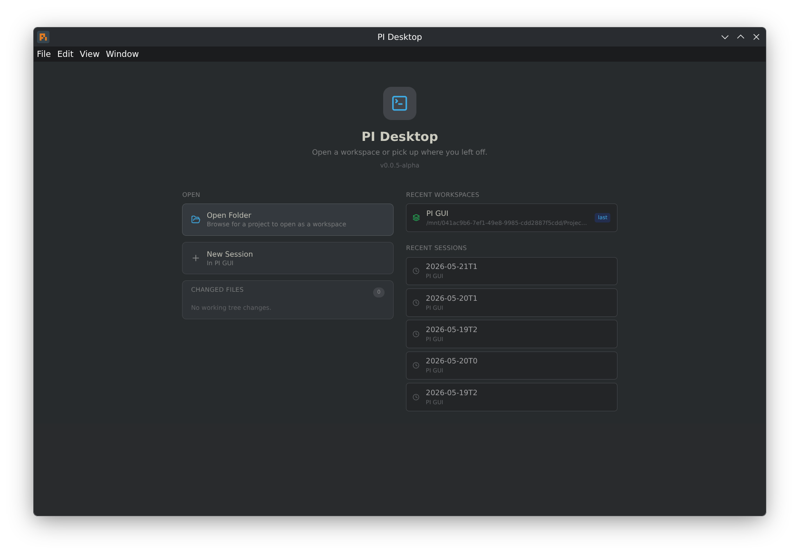
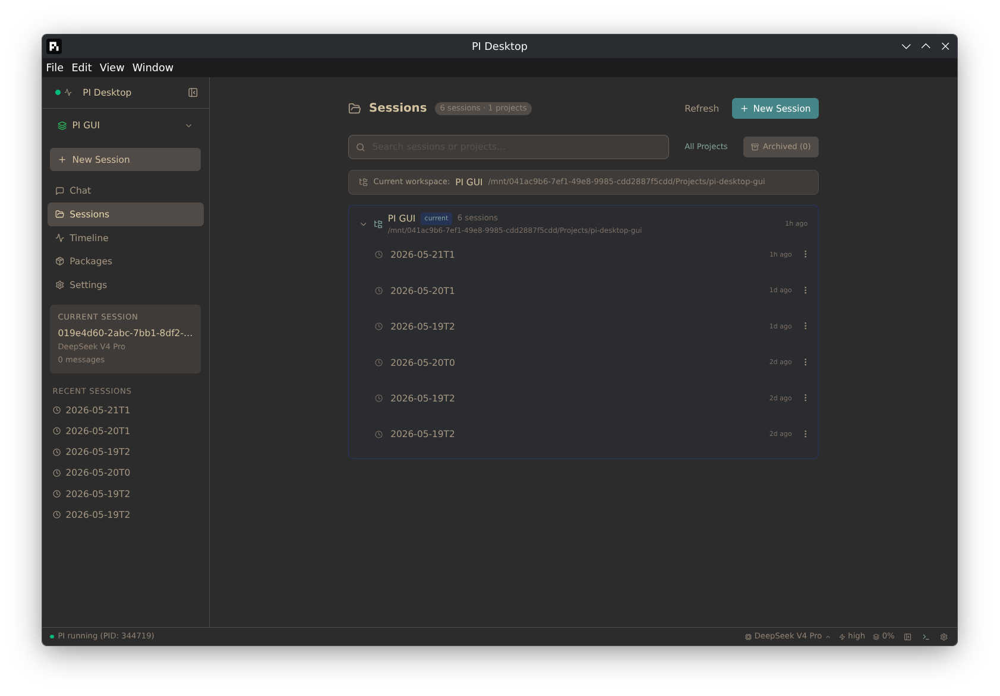
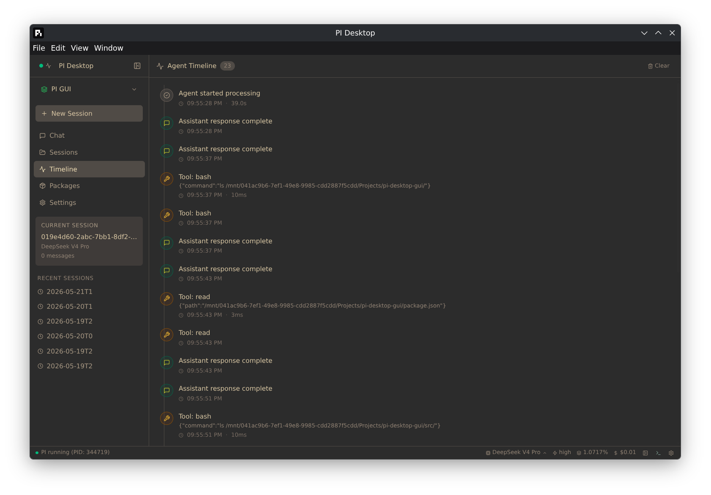
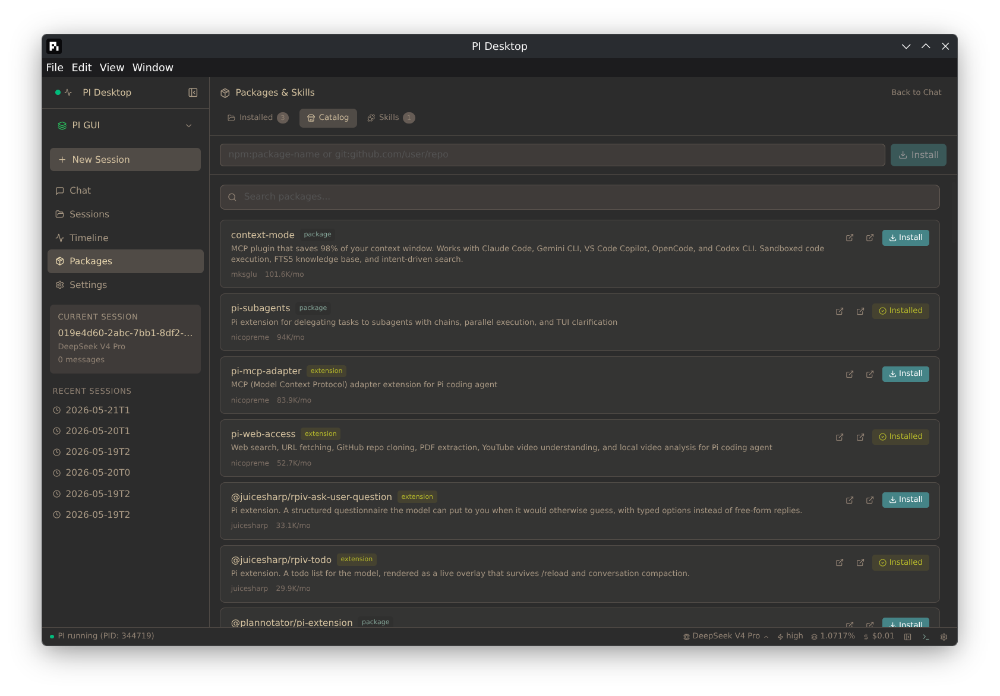
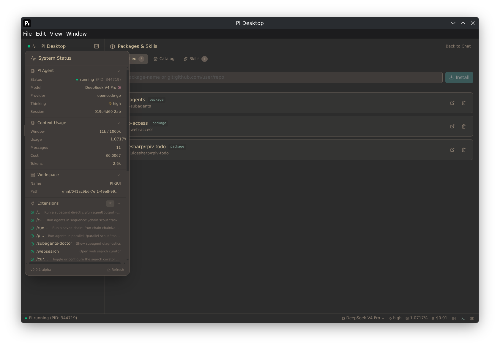
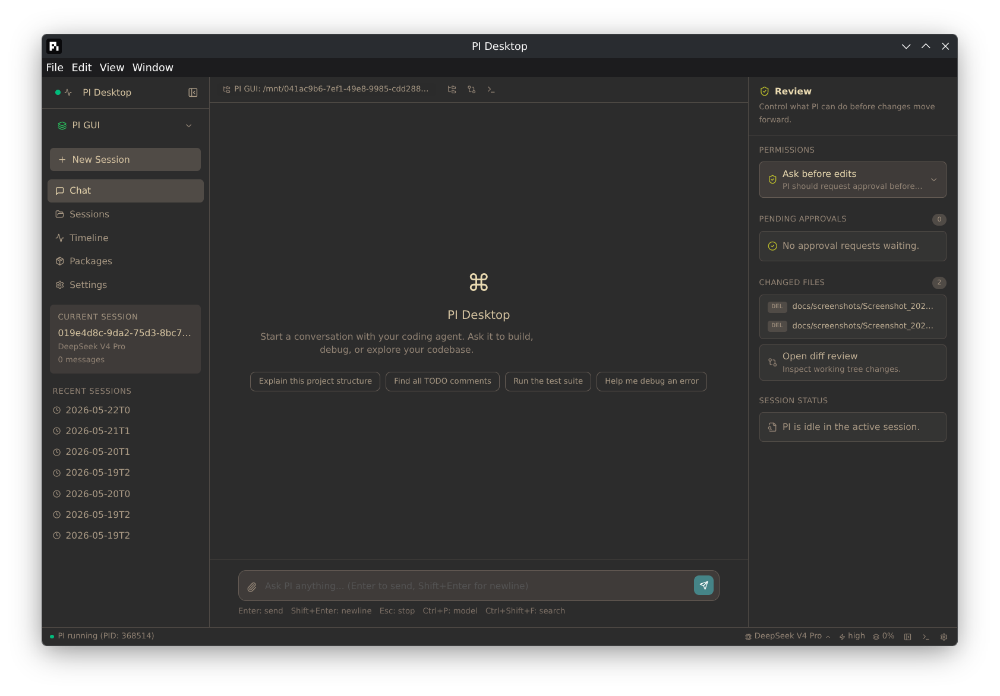
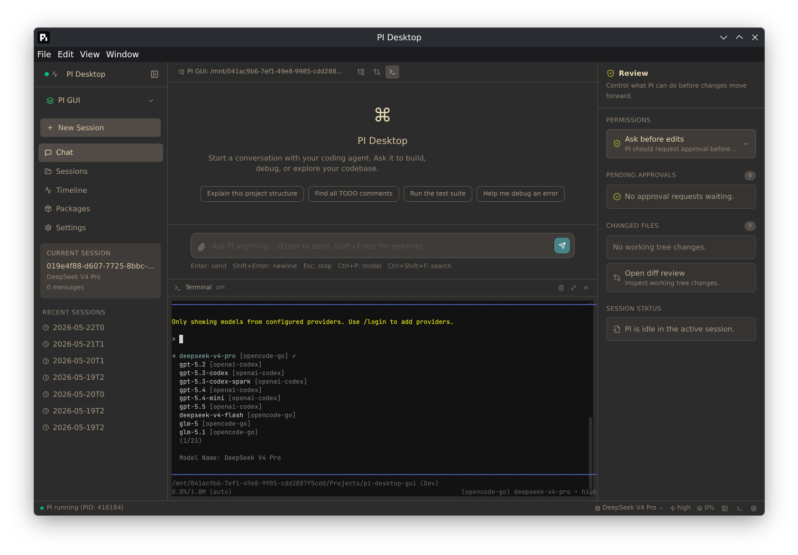

Chat with Pi, review changes, browse files, and run commands — all in one window. Free and open source.







What's inside
Real-time streaming with thinking blocks and tool-use visibility. Rich rendering — inline SVG preview, collapsible tool results, clickable file links, color emoji. Watch Pi reason through problems step by step.
Each workspace gets its own Pi process and session history. Switch between projects instantly without losing context.
See changed files, permissions, and session status at a glance. Approve or deny tool calls without leaving the chat.
Browse your project and review diffs inline. File search with Ctrl+Shift+F.
Open and edit files in a real CodeMirror 6 editor with syntax highlighting for 15+ languages. Save/Revert controls and instant feedback.
Full PTY terminal with ANSI color support, right inside the app. No switching windows.
Browse and install Pi packages from pi.dev/packages without leaving the app.
Dark, Light, System, Nord, Gruvbox, Breeze Dark, Breeze Light, and Breeze Claudius. Every setting live-previews before you save.
Cycle between models with Ctrl+P. Session tags keep your work organized.
Session names read straight from Pi, with inline rename right in the sidebar. Themed in-app confirmation for delete — no native dialogs stealing window focus.
Home shows usage stats over 7 days to a year — messages, tokens, active-day streaks, peak hour, and per-model breakdown. Persists even if you delete the session.
Get started
Pi Desktop wraps the Pi coding agent. Install it first:
npm install -g @earendil-works/pi-coding-agent
Grab the latest build for your platform from Releases — Linux AppImage/deb/rpm, macOS DMG (Apple Silicon), or Windows installer/portable.
chmod +x Pi-Desktop-*.AppImage
./Pi-Desktop-*.AppImage
macOS and Windows builds are unsigned (community-tested) — see the README for the one-time Gatekeeper/SmartScreen steps, or build from source to skip them entirely.